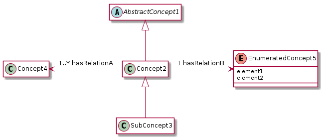
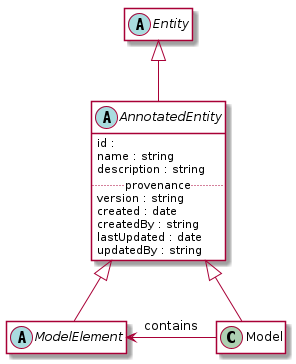
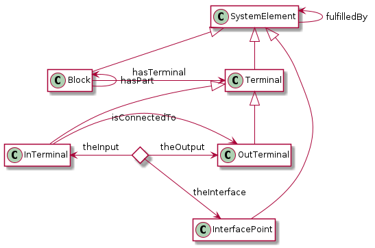
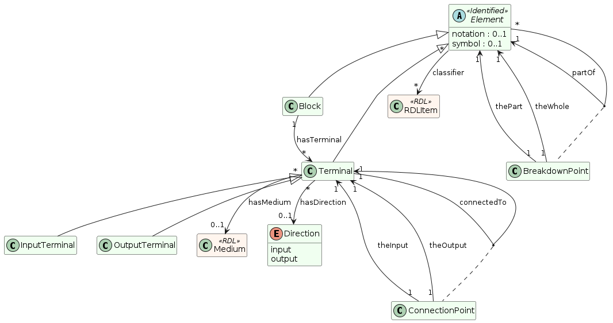
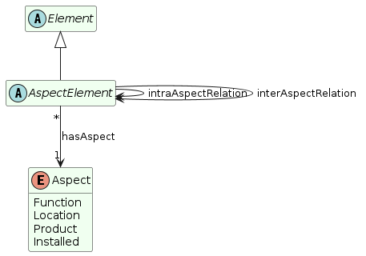
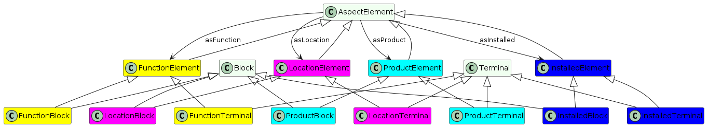
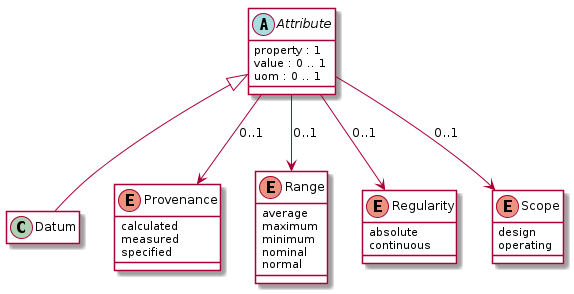
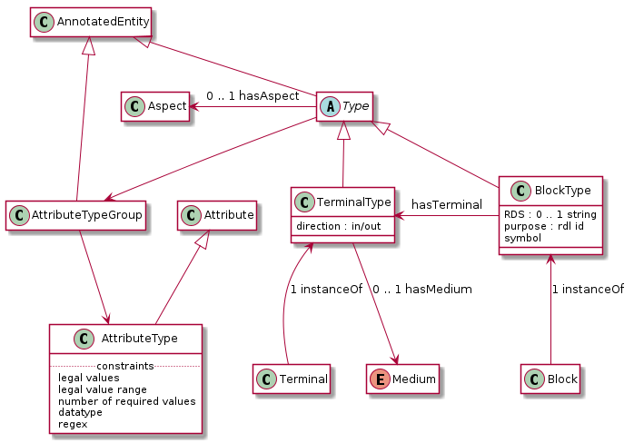
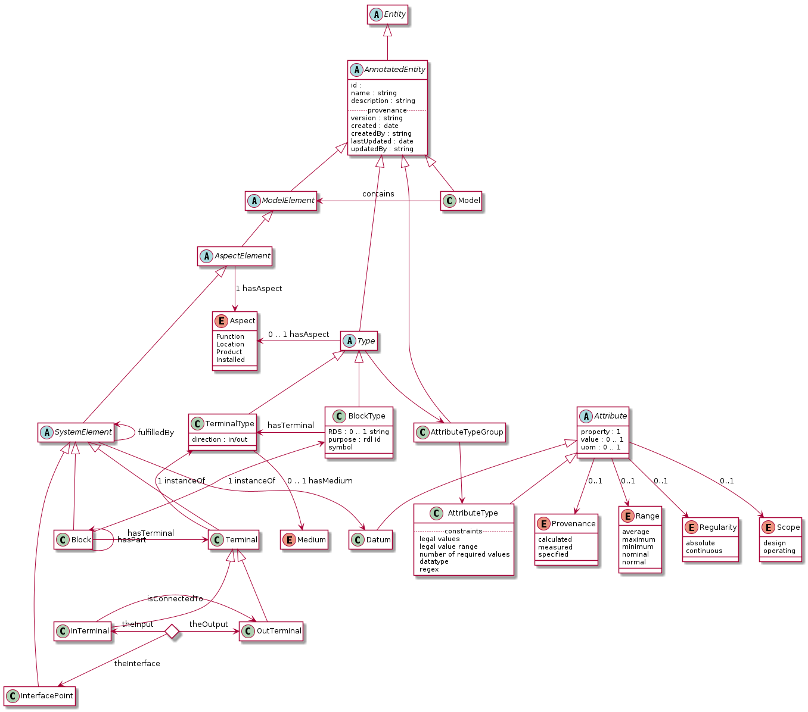

IMF Language v2.1
Table of Contents
- 1. TODOs
[10/27] - 2. Structural Specification
- 3. Vocabulary: OWL Ontology
- 4. Prefixes
1 TODOs [10/27]
Fundamentals:
[ ]Are BreakdownPoints and ConnectionPoints also Elements? Perhaps not: If Elements may be broken down, ie. related by partOf, then we can breakdown a breakdown point, which does not seem correct.[ ]Block and ConnectionPoints should be broken down to Graphs. Terminals might not be Elements (if elements are things that can be broken down to graphs).[ ]Can an Element be member of many Models? What is the name of the relation between an Element and a Model.
Structural spec:
[X]Which fields should be set for[X]elements?[X]nomenclature
[X]types?[X]identifiedEntities
[X]Which entities should be IdentifiedEntities?[ ]Include reifiedRelationships? Could include, but not implement?[X]Describe Model[X]Medium[X]Introduce stereotypes: Identified, Type,
Ontology:
[ ]problem with direction-less connectedTo and the names theInput and theOutput.[ ]replace subproperty of inter/intra-aspectrelation to class axioms on AspectElement.[ ]also FunctionElement and so on, do this in Template
Documentation:
[ ]Maturity: Experimental[ ]Make example[ ]Define instanceOf[ ]annotation to identify properties on types that are to be copied. -> don't copy stereotype attributes
Process:
[ ]Diagrams[ ]Definitions[ ]OWL ontology for RDF data model[ ]SHACL shapes for RDF data model[ ]OTTR templates to instantiate datamodel[ ]bOTTR (SHACL + OTTR) over data model to[ ]OWL class,[ ]SHACL shapes
[ ]Visualisation of RDF data model[ ]Instance data[ ]Type data
Diagrams:
[X]Cardinalities[X]relation names[X]Use stereotypes for- identified element
- reified relation
[X]only datatype properties are represented using fields in the UML classes[X]color UML classes differently- Instance
- Type
- External RDL
Styling:
[ ]size of images
1.1 TODOs from v2.0
- Input to this document
[0/5][ ]Define abstract model - AW[ ]Collect requirements to format from Mimir - ??[ ]Collect requirements to format from POC data - ??[ ]Collect requirements from Tyle[ ]Collect requirements to format for exchanging IMF models? How to sucessfully merge models? - ??
- Introduction
[ ]Concept figure for IT spec[ ]Define abstract/structural model for IMF, including an abstract language for data and types.- This model can have many implementations and different parts can be represented by different languages with different capabilities, for instance a type can be represented as a SHACL shape (for validation of IMF RDF data) and a OWL class (for semantic validation of the type wrt. to an RDL)
- Format specifications
[0/6][ ]Define OWL vocabulary - MGS[ ]Define exchange format- how to represent types
- do data object inherit or copy type data?
[ ]Define SHACL grammar - MGS[ ]Define OTTR templates for creating data - MGS[ ]Define OTTR templates for translating to SHACL - MGS[ ]?? Define JSON/JSON-LD format (using JSON-LD context object) - MGS + DH
- Tools
[0/2][ ]Update Mimir output format - DH?[ ]Update Tyle output format
- Semantics
[0/2][ ]Define Abstract translation of IMF data model to ISO 15926-14 - AW + JWK[ ]Define OTTR templates for translating IMF to ISO 15926-14 - DNV + MGS
- Examples/Demonstrations
[0/5][ ]Implement example from Erlend - MGS[ ]Test validation of IMF data against SHACL grammar - MGS[ ]?? Demonstrate use of OWL ontology - MGS[ ]?? Demonstrate use of OTTR templates for creating IMF data - MGS[ ]?? Test visualisation of RDF on IMF data - MGS
- Other
[0/1][ ]?? Use JSON framing - DH? + MGS
1.1.1 Notes: IMF vocabulary
1.1.1.1 From Mimir
[ ]created - date -> pav:createdOn[ ]createdBy - string? -> pav:createdBy[ ]lastUpdated - date -> pav:lastUpdateOn[ ]updatedBy - string -> pav:contributedBy[ ]rds - string[ ]domain: "mimir:domain": "runir.net",[ ]owl:versionInfo - definition: "The annotation property that provides version information for an ontology or another OWL construct". Rather use pav:version?[ ]hasAspect[ ]hasInTerminal[ ]hasOutTerminal[ ]hasParent[ ]lis:hasPhysicalQuantity[ ]mimir:type
2 Structural Specification
2.1 Introduction
The structural specification is a format and application independent data model specification of the formal specification of IMF. The structural specification aims to faithfully represent the intentions of the formal specification while also including the specification of how, e.g., metadata about objects and attributes and attribute values are represented, which the formal specification does not contain. The purpose of the structural specification is to be a common language and format for developing concrete serialisation formats for IMF and serve as documentation for application developers.
2.2 Diagram legend
The specification consists of a series of partially overlapping diagrams. The combined diagram is presented in Figure …
The diagrams are UML class diagrams are drawn using PlantUML restricted to the following elements:
- Classes, marked with the icon "C". Classes may have "fields" that can hold values, fields are not used to represent relationships.
- Abstract classes, marked with an icon "A", are classes that are not intended to be instantiated.
- Enumerations, marked with the icon "E", are used to represent UML classes with a limited list of instantiations and where the instantiations are defined in the IMF language.
- Stereotypes, marked with an icon "S" are used to represent a class
structure that is not intended to be explictly represented in the
language, but represents a tag and a convenient repetative
structure. Classes that use stereotypes indicate this with
<< stereotype >>above the class name. - Subclass relationships between classes, which are drawn using directed relations with an open arrow.
- Directed associations (relations) between classes, which are marked with a name and possibly a cardinality. If no cardinality is given, then the cardinality is 0–many.
- Composition relations, drawn with a filled diamond as arrow, indicates a strong dependency to the target of the relationship; the target is considered as a part of the source and cannot exist independently of the source of the relationship.
- Composition relations, drawn with a open diamond as arrow, indicates a weak dependency to the target of the relationship than to that of a composition relation, the target is considered as part of the sourec but can exist independently of the source of the relationship.
Here is an example:

Note: The structural specification is described by a series of diagrams, each focus on a specific part. In the case that a class is used in multiple diagrams, only one diagram contains the full specification of the class, while the other diagrams only contain the class name. The diagram that contains the complete specification combines all diagrams and contains all information.
2.3 Model and Identified's todo

2.4 Elements

Notes:
- Use classifier for purpose?
2.4.1 … with reified relations

2.5 Aspects and Aspect Elements

2.5.1 Inter aspect Relations

2.5.2 Convenient AspectElement specialisations

2.6 Attribute Values (aka Datums)

2.7 Types

2.8 Complete Specification

3 Vocabulary: OWL Ontology
The IMF vocabulary is defined by an OWL ontology, also called the IMF ontology.
The IMF ontology is specified by this document using a series of code snippets which are compiled to different OWL files serialised in RDF Turtle syntax.
In order not to duplicate and to avoid synchronisation issues, the definition and description of the ontology and its contents are put directly in the ontology sources; please read these for more information.
3.1 Main ontology
3.1.1 Import hierarchy
The diagram displays the different ontology documents that the IMF ontology consists of and the import relations that exist between these.
3.2 Elements Sub-Ontology
3.2.1 Header
<http://ns.imfid.org/imf-elements> a owl:Ontology ;
owl:versionIRI <http://ns.imfid.org/20230331/imf-elements> ;
## owl:imports <http://ns.imfid.org/20230331/imf-top> ;
skos:prefLabel "Information Modelling Framework Ontology: Elements " ;
skos:scopeNote """
""" ;
.
3.2.2 Element
imf:Element a owl:Class . [] ottr:of o-owl-ma:ClassPartition ; ottr:values ( imf:Element ( imf:Block imf:Terminal ) ) .
3.2.3 partOf / hasPart
imf:partOf a owl:ObjectProperty; a owl:FunctionalProperty ; a owl:IrreflexiveProperty ; rdfs:subPropertyOf imf:intraAspectRelation, imf:hierarchicalRelation, skos:broader ; rdfs:domain imf:Element ; rdfs:range imf:Element ; skos:prefLabel "is part of" ; skos:altLabel "has parent" ; . imf:hasPart a owl:ObjectProperty ; rdfs:subPropertyOf imf:intraAspectRelation, imf:hierarchicalRelation, skos:narrower ; owl:inverseOf imf:partOf ; skos:prefLabel "has part"; skos:altLabel "has child"; .
3.2.4 hasClassifier
imf:hasClassifier a owl:ObjectProperty .
3.2.5 Element data properties
# skos:notation imf:symbol a owl:DatatypeProperty .
3.2.6 Block
imf:Block a owl:Class ; rdfs:subClassOf imf:Element ; skos:prefLabel "Block" ; . [] ottr:of o-owl-ax:SubObjectAllValuesFrom ; ottr:values (imf:Block imf:partOf imf:Block) .
3.2.7 Terminal
imf:Terminal a owl:Class ; rdfs:subClassOf imf:Element ; skos:prefLabel "Terminal" ; skos:altLabel "Port", "Channel", "Input/Output" ; . [] ottr:of o-owl-ax:SubObjectAllValuesFrom ; ottr:values (imf:Terminal imf:partOf imf:Terminal) . imf:hasTerminal a owl:ObjectProperty ; rdfs:subPropertyOf imf:intraAspectRelation , imf:associativeRelation ; rdfs:domain imf:Block ; rdfs:range imf:Terminal ; skos:prefLabel "has terminal" ; skos:definition "The relation between a block and its terminals."; .
3.2.8 hasMedium
imf:hasMedium a owl:ObjectProperty ; rdfs:subPropertyOf imf:hasClassifier ; rdfs:domain imf:Terminal .
3.2.9 connectedTo
imf:connectedTo a owl:ObjectProperty ; a owl:FunctionalProperty ; a owl:IrreflexiveProperty ; rdfs:subPropertyOf imf:intraAspectRelation , imf:associativeRelation ; skos:prefLabel "connected to" ; rdfs:domain imf:Terminal ; rdfs:range imf:Terminal ; .
3.2.10 Terminal Direction + hasDirection
imf:TerminalDirection a owl:Class . imf:inDirection a owl:NamedIndividual, imf:TerminalDirection . imf:outDirection a owl:NamedIndividual, imf:TerminalDirection. imf:hasDirection a owl:ObjectProperty ; rdfs:domain imf:Terminal ; rdfs:range imf:TerminalDirection .
3.2.11 Input/OutputTerminal
imf:InputTerminal a owl:Class ; rdfs:subClassOf imf:Terminal ; skos:prefLabel "Input Terminal" ; skos:altLabel "Input" ; . [] ottr:of o-owl-ax:EquivHasValue ; ottr:values ( imf:InputTerminal imf:hasDirection imf:inDirection ) . imf:OutputTerminal a owl:Class ; rdfs:subClassOf imf:Terminal ; skos:prefLabel "Output Terminal" ; skos:altLabel "Output" ; . [] ottr:of o-owl-ax:EquivHasValue ; ottr:values ( imf:OutputTerminal imf:hasDirection imf:outDirection ) . [] ottr:of o-owl-ma:ClassPartition ; ottr:values ( imf:Terminal ( imf:InputTerminal imf:OutputTerminal ) ) . imf:hasInputTerminal a owl:ObjectProperty ; rdfs:subPropertyOf imf:hasTerminal ; skos:prefLabel "has input terminal" ; rdfs:range imf:InputTerminal ; skos:definition "The relation between a block and its input terminals."; . imf:hasOutputTerminal a owl:ObjectProperty ; rdfs:subPropertyOf imf:hasTerminal ; skos:prefLabel "has output terminal" ; rdfs:range imf:OutputTerminal ; skos:definition "The relation between a block and its output terminals."; .
3.2.12 BreakdownPoint
imf:BreakdownPoint a owl:Class ; # rdfs:subClassOf skos:prefLabel "Breakdown Point" ; # skos:altLabel . imf:thePart a owl:ObjectProperty ; rdfs:domain imf:BreakdownPoint ; rdfs:range imf:Element . imf:theWhole a owl:ObjectProperty ; rdfs:domain imf:BreakdownPoint ; rdfs:range imf:Element . imf:partOf a owl:ObjectProperty ; owl:propertyChainAxiom ( [ owl:inverseOf imf:thePart ] imf:theWhole ) .
3.2.13 ConnectionPoint
imf:ConnectionPoint a owl:Class ; # rdfs:subClassOf skos:prefLabel "Connection Point" ; # skos:altLabel . imf:theInput a owl:ObjectProperty ; rdfs:domain imf:ConnectionPoint ; rdfs:range imf:Terminal . # imf:OutputTerminal imf:theOutput a owl:ObjectProperty ; rdfs:domain imf:ConnectionPoint ; rdfs:range imf:Terminal . # imf:InputTerminal imf:connectedTo a owl:ObjectProperty ; owl:propertyChainAxiom ( imf:theOutput [ owl:inverseOf imf:theInput ] ) .
3.3 Aspects Sub-Ontology
3.3.1 Overview
3.3.2 Ontology source
3.3.2.1 Header
<http://ns.imfid.org/imf-aspects> a owl:Ontology ;
owl:versionIRI <http://ns.imfid.org/20230331/imf-aspects> ;
## owl:imports <http://ns.imfid.org/20230331/imf-top> ;
skos:prefLabel "Information Modelling Framework Ontology: Aspects " ;
skos:altLabel "IMF aspects ontology" ;
skos:scopeNote """
This ontology defines IMF's central aspects.
""";
.
# imf:LocationTerminal rdfs:subClassOf owl:Nothing .
# imf:LocationInterfacePoint rdfs:subClassOf owl:Nothing .
3.3.2.2 AspectElement
imf:AspectElement a owl:Class ; rdfs:subclassOf imf:Element ; skos:prefLabel "Aspect Element"; . ### properties imf:hasAspect a owl:ObjectProperty ; skos:prefLabel "has aspect" ; skos:definition "Relates an Aspect Element to its Aspect."; rdfs:domain imf:AspectElement ; rdfs:range imf:Aspect .
3.3.2.3 Aspect
imf:Aspect a owl:Class .
imf:intraAspectRelation a owl:ObjectProperty ;
skos:prefLabel "intra-aspect relation";
rdfs:subPropertyOf skos:semanticRelation ;
#rdfs:domain imf:AspectElement ;
#rdfs:range imf:AspectElement ;
skos:definition "A generic relation between aspect objects of the same aspect"
.
[] ottr:of o-owl-ax:SubObjectAllValuesFrom ;
ottr:values ( imf:AspectElement imf:intraAspectRelation imf:AspectElement ) .
imf:interAspectRelation a owl:ObjectProperty ;
skos:prefLabel "inter-aspect relation";
rdfs:domain imf:AspectElement ;
rdfs:range imf:AspectElement ;
rdfs:subPropertyOf skos:related
# owl:propertyDisjointWith imf:intraAspectRelation ; ## An error occurred during reasoning: Non-simple property or its inverse appears in disjoint properties axiom.
.
3.3.2.4 Aspects
This is the current list of aspects:
| Aspect, IRIs | Prefix, string | Color, string |
|---|---|---|
| imf:FunctionAspect | '=' | '#FFFF00' |
| imf:LocationAspect | '+' | '#FF00FF' |
| imf:ProductAspect | '-' | '#00FFFF' |
| imf:InstalledAspect | '::' | '#0000FF' |
## This creates an individual for each of the aspects in the table.
o-imf:Aspect [owl:NamedIndividual ?aspect, xsd:string ?symbol, xsd:string ?color] :: {
o-rdf:Type(?aspect, imf:Aspect) ,
ottr:Triple(?aspect, imf:prefix, ?symbol),
ottr:Triple(?aspect, imf:color, ?color)
} .
o-imf:AspectClass [owl:Class ?class, owl:NamedIndividual ?aspect] :: {
o-owl-ax:SubClassOf(?class, imf:AspectElement),
o-owl-ax:EquivObjectHasValue(?class, imf:hasAspect, ?aspect)
o-owl-ax:SubObjectAllValuesFrom(?class, imf:intraAspectRelation, ?class)
} .
o-imf:AspectElementClass [owl:Class ?class, owl:Class ?aspectClass, owl:Class ?elementClass] :: {
o-owl-ax:SubClassOf(?class, ?aspectClass),
o-owl-ax:SubClassOf(?class, ?elementClass)
} .
o-imf:InterAspectRelation [owl:ObjectProperty ?property, owl:Class ?aspectClass] :: {
o-rdf:Type(?property, owl:ObjectProperty),
o-owl-ax:SubPropertyOf(?property, imf:InterAspectRelation),
o-rdfs:Range(?property, ?aspectClass)
} .
3.4 Attributes Sub-Ontology
3.4.1 Header
<http://ns.imfid.org/imf-attributes> a owl:Ontology ;
owl:versionIRI <http://ns.imfid.org/20230331/imf-attributes> ;
## owl:imports <http://ns.imfid.org/20230331/imf-top> ;
skos:prefLabel "Information Modelling Framework Ontology: Attributes " ;
skos:scopeNote """
""" ;
.
3.4.2 AttributeValue
imf:AttributeValue a owl:Class . imf:hasAttributeValue a owl:ObjectProperty ; rdfs:range imf:AttributeValue . imf:hasProperty a owl:ObjectProperty ; rdfs:subPropertyOf imf:hasClassifier ; rdfs:domain imf:AttributeValue . imf:hasUOM a owl:ObjectProperty ; rdfs:subPropertyOf imf:hasClassifier ; rdfs:domain imf:AttributeValue . imf:hasValue a owl:DatatypeProperty ; rdfs:domain imf:AttributeValue .
3.4.3 AttributeGroup
imf:AttributeGroup a owl:Class . imf:hasAttributeGroup a owl:ObjectProperty ; rdfs:range imf:AttributeGroup .
3.4.4 DatumQualifier
imf:DatumQualifier a owl:Class . imf:hasDatumQualifier a owl:ObjectProperty ; rdfs:domain imf:AttributeValue ; rdfs:range imf:DatumQualifier .
3.4.5 DatumQualifiers
| Qualifier | Instance |
|---|---|
| imf:Provenance | imf:calculated |
| imf:Provenance | imf:measured |
| imf:Provenance | imf:specified |
| imf:Range | imf:average |
| imf:Range | imf:maximum |
| imf:Range | imf:minimum |
| imf:Range | imf:nominal |
| imf:Range | imf:normal |
| imf:Regularity | imf:absolute |
| imf:Regularity | imf:continuous |
| imf:Scope | imf:design |
| imf:Scope | imf:operating |
o-imf:DatumQualifier [owl:Class ?qualifierClass, NEList<owl:NamedIndividual> ?qualifierInstances] :: {
o-rdf:Type(?qualifierClass, owl:Class) ,
o-owl-ax:SubClassOf(?qualifierClass, imf:DatumQualifier) ,
o-owl-ax:SubObjectMaxCardinality(imf:AttributeValue, "1"^^xsd:nonNegativeInteger, imf:hasDatumQualifier, ?qualifierClass),
cross | o-rdf:Type(++?qualifierInstances, ?qualifierClass),
o-owl-ax:EquivObjectOneOf(?qualifierClass, ?qualifierInstances),
o-owl-ax:DifferentIndividuals(?qualifierInstances)
} .
3.5 Types Sub-Ontology
3.5.1 Overview
3.5.2 Ontology source
3.5.2.1 Header
<http://ns.imfid.org/imf-types> a owl:Ontology ;
owl:versionIRI <http://ns.imfid.org/20230331/imf-types> ;
## owl:imports <http://ns.imfid.org/20230331/imf-top> ;
skos:prefLabel "Information Modelling Framework Ontology: Types " ;
skos:altLabel "IMF types ontology" ;
skos:scopeNote """
""";
.
3.5.2.2 Types
imf:Type a owl:Class ; skos:prefLabel "Type"; . imf:ElementType a owl:Class ; rdfs:subClassOf imf:Type ; skos:prefLabel "Element Type"; . imf:BlockType a owl:Class ; rdfs:subClassOf imf:ElementType ; skos:prefLabel "Block Type"; . imf:TerminalType a owl:Class ; rdfs:subClassOf imf:ElementType ; skos:prefLabel "Terminal Type"; . imf:AttributeType a owl:Class ; rdfs:subClassOf imf:Type ; skos:prefLabel "Attribute Type"; . imf:AttributeGroupType a owl:Class ; rdfs:subClassOf imf:Type ; skos:prefLabel "Attribute Group Type"; . imf:hasTerminalType a owl:ObjectProperty ; rdfs:domain imf:BlockType ; rdfs:range imf:TerminalType ; .
3.5.2.3 Type constraint
imf:TypeConstraint a owl:Class . [] ottr:of o-owl-ax:SubDataMaxCardinality ; ottr:values ( imf:TypeConstraint "1"^^xsd:nonNegativeInteger imf:minCount xsd:integer ) . [] ottr:of o-owl-ax:SubDataMaxCardinality ; ottr:values ( imf:TypeConstraint "1"^^xsd:nonNegativeInteger imf:maxCount xsd:integer ) .
3.5.2.4 Relation constraints
[] ottr:of o-owl-ax:SubObjectMaxCardinality ; ottr:values ( imf:ElementType "1"^^xsd:nonNegativeInteger imf:hasAspect imf:Aspect ) . [] ottr:of o-owl-ax:SubDataMaxCardinality ; ottr:values ( imf:ElementType "1"^^xsd:nonNegativeInteger skos:notation rdfs:Literal ) . [] ottr:of o-owl-ax:SubDataMaxCardinality ; ottr:values ( imf:ElementType "1"^^xsd:nonNegativeInteger imf:symbol rdfs:Literal ) . [] ottr:of o-owl-ax:SubObjectMaxCardinality ; ottr:values ( imf:TerminalType "1"^^xsd:nonNegativeInteger imf:hasDirection imf:Direction ) . [] ottr:of o-owl-ax:SubObjectMaxCardinality ; ottr:values ( imf:TerminalType "1"^^xsd:nonNegativeInteger imf:hasMedium owl:Thing ) .
3.5.2.5 instanceOf
imf:instanceOf a owl:ObjectProperty ; skos:prefLabel "instance of" ; rdfs:range imf:Type . [] ottr:of o-owl-ax:SubObjectAllValuesFrom ; ottr:values ( imf:Element imf:instanceOf imf:ElementType ) . [] ottr:of o-owl-ax:SubObjectAllValuesFrom ; ottr:values ( imf:Block imf:instanceOf imf:BlockType ) . [] ottr:of o-owl-ax:SubObjectAllValuesFrom ; ottr:values ( imf:Terminal imf:instanceOf imf:TerminalType ) . [] ottr:of o-owl-ax:SubObjectAllValuesFrom ; ottr:values ( imf:AttributeValue imf:instanceOf imf:AttributeType ) . [] ottr:of o-owl-ax:SubObjectAllValuesFrom ; ottr:values ( imf:AttributeGroup imf:instanceOf imf:AttributeGroupType ) .
3.6 All IMF Ontologies combined
11:04:28 INFO riot :: File: out/owl/imf.owl.ttl file:///home/martige/repo/imf-lab/imf-ontology/out/owl/imf.owl.ttl : 0.23 sec : 23 Triples : 99.14 per second 11:04:28 INFO riot :: File: out/owl/imf-aspects.owl.ttl file:///home/martige/repo/imf-lab/imf-ontology/out/owl/imf-aspects.owl.ttl : 0.03 sec : 121 Triples : 3,903.23 per second 11:04:28 INFO riot :: File: out/owl/imf-attributes.owl.ttl file:///home/martige/repo/imf-lab/imf-ontology/out/owl/imf-attributes.owl.ttl : 0.02 sec : 140 Triples : 6,363.64 per second 11:04:28 INFO riot :: File: out/owl/imf-types.owl.ttl file:///home/martige/repo/imf-lab/imf-ontology/out/owl/imf-types.owl.ttl : 0.02 sec : 96 Triples : 5,052.63 per second Total : 0.30 sec : 380 Triples : 1,250.00 per second
4 Prefixes
This section contains the prefixes used throughout this document.
4.1 Standard vocabulary prefixes
@prefix xsd: <http://www.w3.org/2001/XMLSchema#> . @prefix rdf: <http://www.w3.org/1999/02/22-rdf-syntax-ns#> . @prefix rdfs: <http://www.w3.org/2000/01/rdf-schema#> . @prefix owl: <http://www.w3.org/2002/07/owl#> . @prefix skos: <http://www.w3.org/2004/02/skos/core#> . @prefix pav: <http://purl.org/pav/> . @prefix sh: <http://www.w3.org/ns/shacl#> . @prefix shsh: <http://www.w3.org/ns/shacl-shacl#> . @prefix ex: <http://example.com#> .
4.2 IMF prefixes
@prefix imf: <http://ns.imfid.org/imf#> . @prefix p14: <http://example.com/P14#> .
4.3 OTTR template prefixes
@prefix ottr: <http://ns.ottr.xyz/0.4/> . @prefix o-rdf: <http://tpl.ottr.xyz/rdf/0.1/> . @prefix o-rdfs: <http://tpl.ottr.xyz/rdfs/0.2/> . @prefix o-owl-ax: <http://tpl.ottr.xyz/owl/axiom/0.1/> . @prefix o-owl-ma: <http://tpl.ottr.xyz/owl/macro/0.1/> . @prefix o-owl-rstr: <http://tpl.ottr.xyz/owl/restriction/0.1/> . @prefix o-imf: <http://ns.imfid.org/templates/> .